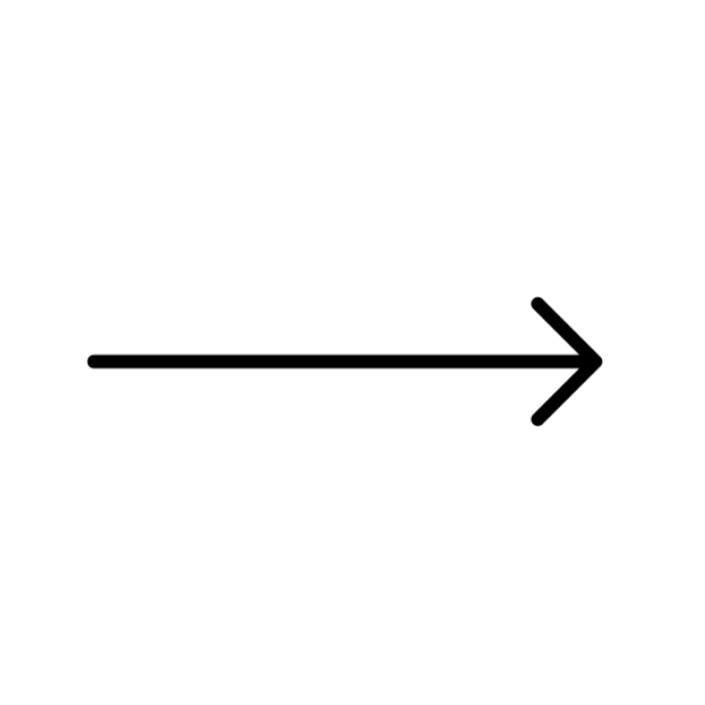

ABOUT LINKED DATA
What is Linked Open Data?
If you are new to the topic, Europeana's video "Linked Open Data - What is It?" is a great introduction. The glossary section at the end of this page may also be helpful in getting familiar with some of the terms. Put simply, instead of having information in tabular spreadsheets or relational databases on personal servers, linked open data is data organized in a "network" fashion and published directly to the web. Some linked data is not open or available to the general public—making it simply "linked data". But through collaboration with the Semantic Lab at Pratt, Linking Lost Jazz Shrines is publishing linked open data.
The four "rules" of Linked Data as set forth by Tim Berners-Lee in 2006 are as follows:
- Use Uniform Resource Identifiers (URIs) as names for things
- Use HTTP URIs so that people can look up those names.
- When someone looks up a URI, provide useful information, using the standards (RDF*, SPARQL)
- Include links to other URIs. so that they can discover more things.
And in 2010, Berners-Lee added the 5-star rating system:
- ★ Available on the web (whatever format) but with an open licence, to be Open Data
- ★★ Available as machine-readable structured data (e.g. excel instead of image scan of a table)
- ★★★ Available as machine-readable structured data as (2) plus non-proprietary format (e.g. CSV instead of excel)
- ★★★★ All the above plus, Use open standards from W3C (RDF and SPARQL) to identify things, so that people can point at your stuff
- ★★★★★ All the above, plus: Link your data to other people’s data to provide context
Subjects, Predicates, and Objects
The structure of linked data is similar to natural language sentences. In linked data, statements or "linked data triples" are comprised of three components: the subject, predicate, and the object. In the Wikibase platform—which powers Wikidata—the subject is called an "item", the predicate is called "property", and the object is called "value."
For example, in the sentence "Sister Rosetta Tharp played the electric guitar", "Sister Rosetta Tharp" is the subject (item), "played" is the predicate (property), and "the electric guitar" is the object (value).
Uniform Resource Identifiers
Following one of the main rules of linked data, Uniform Resource Identifiers (URIs) should be used to identify things. URLs are related to URIs in that URLs are a subset of URIs. URIs can be a name or a location of a resource, whereas a URL is only the location (web address) of a resource. For a more in depth discussion of URIs vs. URLs, please see senior software engineer Milecia McGregor's explanation here.
URIs for predicates (properties) can be found from ontologies, and URIs for subjects (items) and objects (values) can be found in ontologies, authority files, or controlled vocabularies. For the sentence "Sister Rosetta Tharp played the electric guitar", the musicbrainz authority record https://musicbrainz.org/artist/f5625c87-5a62-4b3b-a375-fe08a71acddc can be used for the subject "Sister Rosetta Tharpe", the music ontology predicate http://purl.org/ontology/mo/primary_instrument can be used for the predicate "played", and musicbrainz can also be used for the object "electric guitar" (https://musicbrainz.org/instrument/7ee8ebf5-3aed-4fc8-8004-49f4a8c45a87).
Putting it Together
While it may not look like much, this "sentence"—comprised of subject, predicate, and object URIs—is a linked data triple!
< https://musicbrainz.org/artist/f5625c87-5a62-4b3b-a375-fe08a71acddc >
< http://purl.org/ontology/mo/primary_instrument >
< https://musicbrainz.org/instrument/7ee8ebf5-3aed-4fc8-8004-49f4a8c45a87> .
This page only serves as an introduction to linked data. Further information can be found in the Linked Data Glossary and Additional Readings sections of this page.

"Sister Rosetta Tharpe"

"primarily plays the instrument"
"electric guitar"
Linked Data Glossary
Below definitions are from the 2019 article Foundations in Linked Data for Serialists, by Amber Billey, Robert Rendall, and Kathryn Wesley. Additional linked data related terms and their definitions can be found at the W3C Linked Data Glossary.
Domain: describes which individuals of a class a property may be used with or applied to; domain is referred to in ontologies with the label “used with” and applies to the subject of a triple
Class: types of things that can be described
Object (Value): the subjects and objects of triples belong to classes.
Ontology: a vocabulary that is encoded for machine processing using a W3C standard markup metalanguage, such as OWL or RDFS is an ontology
Predicate (Property): relationships that can be described between classes
Range: values that a property can have and may be thought of as “expected value", applies to the object of a triple
RDF: Resource Description Framework, a W3C standard for data interchange on the web
SPARQL: SPARQL Protocol and RDF Query Language, a language used to retrieve data stored in RDF
Subject (Item): the subjects and objects of triples belong to classes
Triple: structure of RDF data, which consists of a subject, predicate, and object
Triple Store: rdf data storage for linked data
Uniform Resource Identifier (URI): similar to a URL, a URI represents an entity or relationship, while a URL merely specifies a file location
Vocabulary: any published set of classes and properties
Billey, A., Rendall, R., & Wesley, K. (2019). Foundations in linked data for serialists. The Serials Librarian, 76(1–4), 16–29. https://doi.org/10.1080/0361526X.2019.1598748. Archive URL https://web.archive.org/web/20230616155031/https://www.tandfonline.com/doi/full/10.1080/0361526X.2019.1598748.
Blaney, J. (2017). Introduction to the principles of linked open data. Programming Historian. https://programminghistorian.org/en/lessons/intro-to-linked-data. Archive URL https://web.archive.org/web/20230529023437/https://programminghistorian.org/en/lessons/intro-to-linked-data.
Gottschling, M. (n.d.). 7 things you should know about...Linked Data. COAR. Retrieved August 30, 2020, from https://www.coar-repositories.org/old-pages/community/events/archive/repository-observatory-third-edition/coar-talks-ir-cris-interoperability/second-edition-linked-open-data/7-things-you-should-know-about-open-data/. Archive URL https://web.archive.org/web/20230130202737/https://www.coar-repositories.org/old-pages/community/events/archive/repository-observatory-third-edition/coar-talks-ir-cris-interoperability/second-edition-linked-open-data/7-things-you-should-know-about-open-data/
McCormick, M. (n.d.). The joys of sparql: An rdf query language. Retrieved August 30, 2020, from http://code.maiamccormick.com/blog/2015/03/04/the-joys-of-sparql/. Archive URL https://web.archive.org/web/20161018041703/http://code.maiamccormick.com/blog/2015/03/04/the-joys-of-sparql/
Tillman, R. K. (2016, March 20). An introduction to rdf for librarians(Of a metadata bent). Ruth Kitchin Tillman. https://ruthtillman.com/post/introduction-rdf-librarians-metadata/. Archive URL https://web.archive.org/web/20230325133759/https://ruthtillman.com/post/introduction-rdf-librarians-metadata/
Image Credits
- "LOD cloud diagram" derived from lod-cloud.net. Licensed under CC BY 4.0. Accessed 16 Feb 2019. https://lod-cloud.net/clouds/lod-cloud-sm.jpg
- "Liner notes for Rosetta Records 1317: Sister Rosetta Tharpe" by Jazz Archive at Duke University. Licensed under CC BY-NC-SA 2.0. Accessed 16 Feb 2019. www.flickr.com/photos/dukejazzarchive/4397732105
- "Arrow" by Made, AU. Licensed under CC BY 3.0. Accessed 29 August 2020. https://thenounproject.com/term/arrow/941551
- "Guitar" by Andy Gigante, US. Licensed under CC BY 3.0. Accessed 29 August 2020. https://thenounproject.com/term/guitar/2206455/